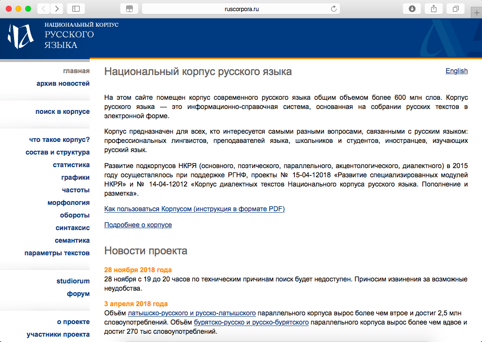

Латышева Варвара Алексеевна
Место учёбы
НИУ ВШЭ, ОП Филология
Научные интересы
Культура и литература Серебряного века, творчество И.С. Тургенева
Немного о себе
Послушай, похоже, опять нашла меня беда,
Я её отвести не сумела.
Ты знаешь, меня заливает песня, как вода,
Сквозь перила ажурные тела.
Как современные технологии могут помочь филологу?
Прочитать весь объем текстов, когда-либо созданных человечеством - невозможно. Более того, зачастую невозможно охватить даже достаточно короткий временной промежуток. Поэтому для поиска определенного элемента или характеристики удобно обратиться к цифровым архивам. Кроме того, компьютер может выполнять механическую состовляющую анализа, что позволяет сэкономить столь ценное для исследователей время и избежать случайных ошибок.
НКРЯ
Добро пожаловать
+
Прекрасная база русскоязычных текстов, достаточно полное их собрание!
Многообразие и точность параметров описания, возможность задать подкорпус, максимально специализировать поиск, сосредоточившись на определенном элементе
Очень удобная штука, если знать как ей пользоваться...
-
Кнопка поиска находится где-то сбоку и никак не выделена
Достаточно сложно разобраться в том, как задать сортировку, например, по времени написания
Зачастую непонятно, сброшены ли настройки поиска или заданный подкорпус все еще применяется
